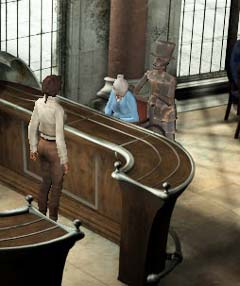
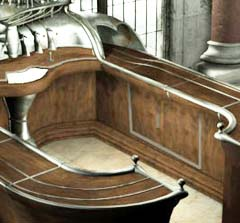
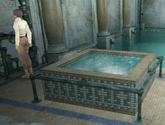

| 概要 | 地図 | |
| 淡いヒント集 | ヒント集 | 的確なヒント集 |
| 攻略最短ルート | Syberia 攻略へ |
| << 前の段階へ | 地域選択へ |
アラルバッド
|

あなたは、ヘレナにこれまでに起きたことと、彼女への頼み事を話すだろう。だが、ヘレナはそれに対してOKとは言ってくれない。なぜなら、彼女は歌姫と呼ばれたときのような声が出なくなっていたのだ。 それでは、どうしたらいいのだろうか? ブルー・ヘレナを作ればよいのだが・・・。 まずは、レシピである。ホテルのパンフレットに書かれたこの数字。電話番号である。ここへ電話すれば、何か手がかりがつかめるだろう。 
レシピさえ分かれば、あとは作るだけである。この装置を使えばよいのだが、カクテルの材料の一部が取り付けられていない。「ウォッカ」はあなたがすでに持っているのだが、「ハチミツ」と「レモン」がないはずだ。 この装置には鍵盤の意味を記した紙が挟まっている。これを参考にすればどのキーがどのお酒なのか分かるだろう。

この画像をよく見て欲しい。カウンターの下に扉があるのが分かるだろうか。 この扉を開くと、中にはハチミツとレモンが置いてある。レモンはそのまま使えば問題ないが、ハチミツは固まっており使い物にならない。それでは、ハチミツを溶かす方法を考えよう。

奥のバルブを回すと、水槽の中の水が沸騰する。この中にハチミツを入れればすぐに溶けるはずだ。 あとはレシピどおりにカクテルを作り、ヘレナに飲ませればよいのだが、それだけでは終わらない。長年歌っていなかった彼女は、自信をすっかりなくしてしまっていたのだ。 ジェイムスが”声でワイングラスを割っていた”と言っているので、実際にワイングラスを置いて試してみよう。グラスは見事に割れ、ヘレナは自信を取り戻すだろう。 そうすれば、もうここでやることはほとんどない。飛行船へ戻るだけである。 |
| << 前の段階へ | 地域選択へ |
| 概要 | 地図 | |
| 淡いヒント集 | ヒント集 | 的確なヒント集 |
| 攻略最短ルート | Syberia 攻略へ |
Syberia
| 目次へ戻る | ページの上部へ |